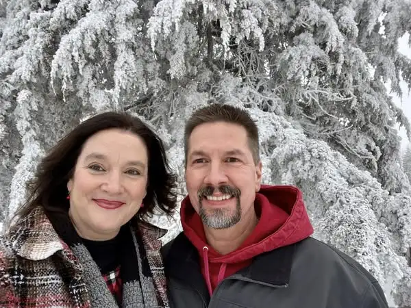
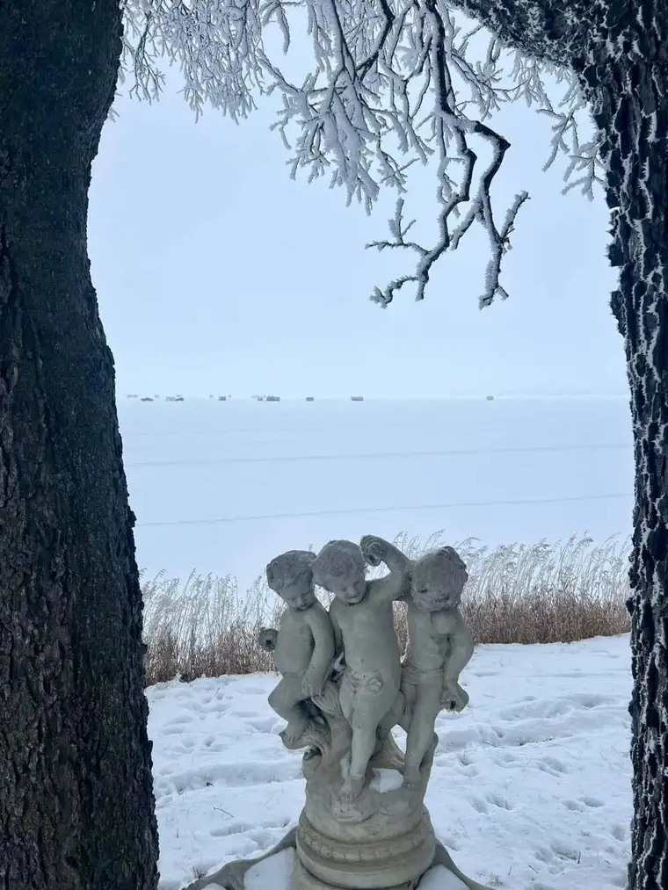
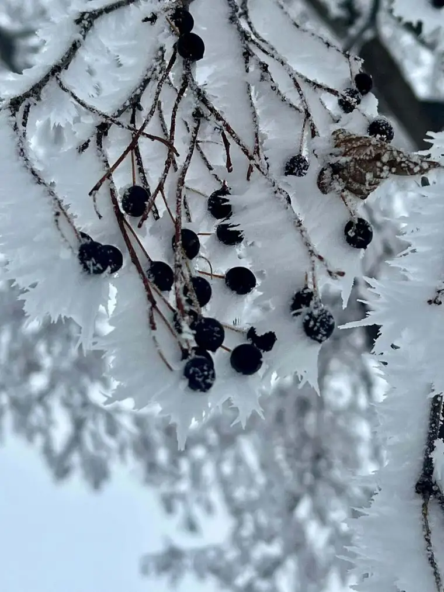
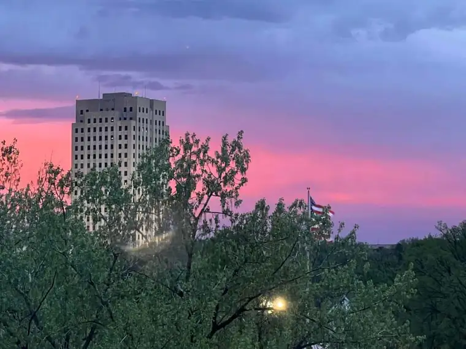

For 17 years now, I’ve been choosing a word at the end of the calendar year to provide a theme and aim for the new year. This year, my website went down in mid-December, and I wasn’t able to address the issue until yesterday. It grieved me to think it might not be resolved in time for this post, which has become my New Year’s Eve tradition, but thankfully, it was resolved today! Though I realize this annual post is more for me than anything, I hope those who stumble upon this reflection, whether in years past or right now, will enjoy it.
To catch you up, here’s a listing of the words I’ve chosen in the past, beginning in 2008. Posts from 2018 onward have links attached, so by clicking on them, you’ll get a sense of the nearly two decades of this practice: Awaken (2008); Healing (2009); Transition (2010); Pursue (2011); Ready (2012); Joy (2013); Expectation (2014); Receive (2015) ; Trust (2016); Hope and Health (2017); Alive (2018); Wisdom (2019); Family (2020); Light (2021)!; Presence (2022); Rest (in Him) (2023) and Listen (to Him) (2024).
As for this year’s word, it came to me in the most beautiful and surprising way. I’ve actually written about it already in The Forum newspaper, so, I don’t need to repeat the whole thing here. But since then, it’s become even more obvious that this is the right word for 2025.
If you read the column I wrote after the passing of my dear mother-in-law, Bev, you’ll see how seemingly unusual this pick of a word is. Rejoice, in the midst of death? Rejoice, when you’ve just lost something dear? Rejoice wouldn’t be a word that would typically come to mind, and for me, it came to mind just days before what should have been a devastating goodbye. Without faith, it would have been so. But with faith, the balance tipped. With faith, “rejoice” emerged even while grief hovered.
It was that smile, with those dimples, that made a lasting impression. It was the words of friends and loved ones who’d been so deeply changed and touched by this one soul. It was her persistence in faith in God that would not let grief have the last word. It was her love for us that did it. And when her spirit melded in the church that day, “Rejoice!” penetrated my soul.
Days later, I was talking to my husband on the phone. Without knowing my word, he mentioned how we are to “rejoice” even in suffering as Christians, and how he planned to abide by that in the weeks and months ahead as a way of addressing his own grief over losing his dear mother. “Yes, that is the commission,” I affirmed. “And that is the word that I have been pondering as well!”
From Philippines 4:4-7: “Rejoice in the Lord always: and again I say it again, ‘Rejoice.’ … The Lord is at hand … in every thing, by prayer and supplication with thanksgiving, let your requests be made known unto God. And the peace of God, which passes all understanding, shall keep your hearts and minds through Christ Jesus.”




As we conversed, I mentioned all the beautiful things in this world that God gives us — all the reasons to rejoice. This year, he gave us beautiful frosted trees in our part of the world on Christmas Day! He gave us the chance to attend Mass, to worship and consume him, so that we might bring him out into the weary world. He gave us faith, though often through suffering, and we have grasped for it, over and over, despite our weaknesses. We have chosen to say, “Yes!” And his grace abounds.
As we talked about all the beautiful things with which God has surrounded us, I said to my husband, “Just think of the sunsets and sunrises alone! Every morning, God greets us with a beautiful sky, painted in a variety of colors, and every night, he says goodnight with the same beautiful canvas. He didn’t have to make it so. But every day, he makes it known that this day is a gift! In this day, we can rejoice, no matter what the day holds, because it is from his hand, and we are alive in the light of a new day, or a day about to end. In each, we find hope.
Just that alone should cause us to rejoice, and it’s only a start! We are so blessed to have such a good God who is so attentive to details, but especially, to the details of our individual hearts. He has counted every hair on our heads. No one escapes his loving gaze. Our only job is to notice, and to give him due praise. When we are open to it, when we let love in, when we decide to trust in the almighty, who created this world, everything changes. Everything takes on color and light. And everything is possible, through him.
I hope you will join me in this year of hope, and in the theme of “Rejoice!” Why can we claim this word? Because God is good, and he loves us. And he is enough!

Have a wonderful 2025, and let your “Rejoice” ring out!